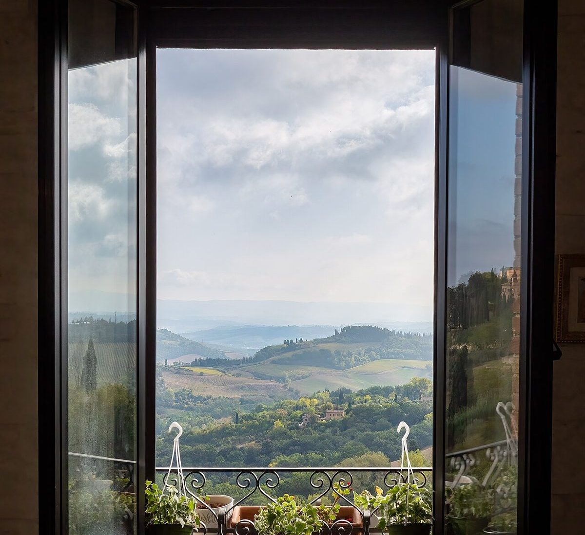
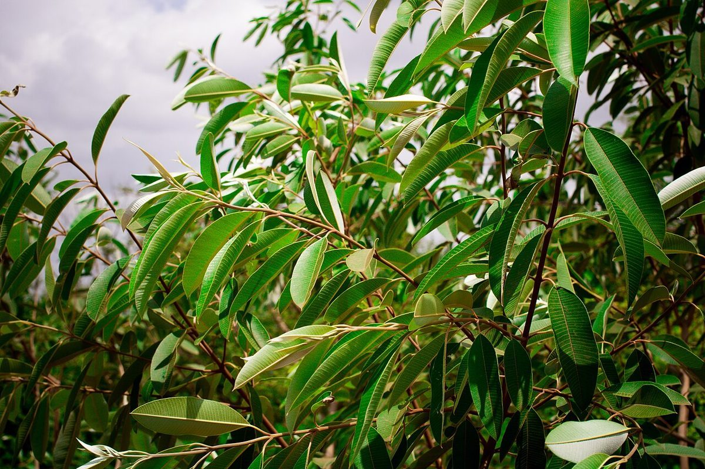

2番線
店のこと
お店について確認できているのは、所在地とInstagramのアカウントだけです。
このページの「想像してみる」部分は、制作側が想像して書いたものです。お店の実際の様子・考え・メニューとは関係がありません。
確認できていること
- 店名は「そらいろカフェ」、業種はカフェ
- 所在地は石川県加賀市動橋町ロ-1番 IRいしかわ鉄道 動橋駅正面
- 電話番号はなし。連絡はInstagramから
- 営業時間・定休日・メニュー・価格・ご予約・駐車場は準備中

想像してみる
「そらいろ」という名前から
由来は分かりません。制作側は、空の色を思わせるやわらかな名前だと感じました。そこから、空を見上げてひと息つく時間を思い浮かべています(実際のお店の姿ではありません)。

